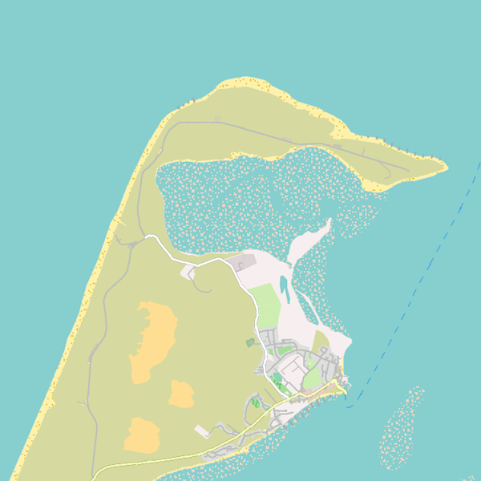

The Freizeitkarte map (leisure map) is addressed to users of Android devices. The Offline-Vector-Maps are based on the projects OpenStreetMap (OSM) and Mapsforge. You can use them with various Android navigation apps (eg. Locus Map, OruxMaps, c:geo, CacheBox,...).
Sylt (elbow): The northernmost point of the country and the only shifting dunes in Germany.
The Freizeitkarte map is based on data from the OpenStreetMap project. The map was developed as a universal map for
- leisure
- and outdoor activities.
Features of the maps:
- very useful for motorists, cyclists and pedestrians
- topographic map with contour lines (equidistance of 20 meters)
- map elements can be turned on or off
Rome - the eternal city: Even before the Nativity Rome had grown to a city of millions.
For the available maps is valid:
- the maps are based on the actual data of the OSM project
- the maps design is derived from the OSM maps Mapnik
- the maps are free and can be used privately without restrictions (see license terms)
- the maps are updated regularly (every three months)
Highly detailed map data: Even the ruins of the Roman monumental buildings are presented.
Terms of Use:
Usage of the maps is at your own risk. The map may contain errors or may be insufficient. The creators of this maps do not offer any guarantee or assume liability for any damages which are directly or indirectly connected to the usage of this map.
We wish you lots of fun with the Freizeitkarte map ... and many interesting trips.